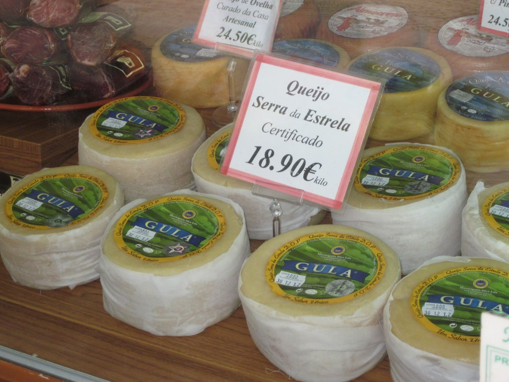

WELCOME TO THE CITY OF LISBON
Food and Resturants
Famous Delicacies of Lisbon
- Pasteis de Belem : Pasteis de nata, a kind of custard tart, are as pervasive in Lisbon as bagels are in Manhattan. The only place to go for the original, though, is the Antiga Confeitaria de Belem* , a tile-decorated bakery on the western edge of the city, where they are known as Pasteis de Belem. Often dusted with cinnamon and powdered sugar
- Queijo da Serra : Portugal is a country of outstanding cheeses, or queijos. The most famous, though, is creamy yellow queijo da serra, made from sheep’s milk and—the ingredient that sets it apart—thistle flower. Produced only in the region of the Estrela mountains, in the north-central part of the country, it is served in many of Lisbon’s finer restaurants. But to get closest to the source without leaving the city, visit Manteigaria Silva, a shop in the historic center whose owners produce their own each winter at their farm in the Serra da Estrela. Queijo da serra hardens as it ages but is perfection when it will drip off a knife.

Queijo da Serra
- Bacalhau : The Portuguese national dish, bacalhau, or salt cod, has its origins on the Grand Banks of the North Atlantic. A flavorful fish, to say the least, there are supposedly at least 365 ways to prepare it, including the 25 served up at the vault-ceilinged Casa do Bacalhau, said to be in the former stables of a duke’s palace in the eastern part of Lisbon. It’s difficult to find any Lisbon restaurant that doesn’t serve some form of it—the most popular is probably bacalhau a bras, a stir fry of cod, rice, scrambled eggs, and onions, garnished with black olives.
Bacalhau
- Carne de Porco Alentejana : Every country with a shoreline seems to have its version of surf and turf. In Portugal it is carne de porco Alentejana, pork cooked with clams that simmer in their juices and are served up with roasted potatoes. The dish—from the southern Alentejo province, known for its summertime heat—actually tastes far better than it sounds, especially when accompanied by an Alentejo red. In Lisbon, try it at Joao do Grao, a traditional restaurant leaning toward the local crowd in the Baixa, or downtown, area.
Carne de Porco Alentejana
- Caldo Verde : Rivaling bacalhau for status as a national dish, this green soup could almost be called soulful, as it is often served in Lisbon nightclubs. The basics of the brothy mix are cabbage, onions, and thin-sliced potatoes, sometimes accompanied by chourico sausage. You’ll find it at the many restaurants in Lisbon that specialize in dishes from the Minho province of northern Portugal, where caldo verde originated. Or spoon into it at one of the fado clubs, such as Pateo de Alfama, where it will be part of the meal accompanying the show.
Few of the Famous Resturants
- Confeitaria Nacional (Praça da Figueira, 18B). This is an old school pastry shop that’s been around since 1829.
- Gelateria Nannarella(Rua Nova da Piedade, 68. A super tiny gelato shop in the Principe Real neighborhood, that makes some of the best gelato
- Casa Da India (Rua Loreto). Simple, inexpensive, no fuss traditional Portuguese food served (despite the name).
- Cantinho Avillez (Rua Duques de Bragança 7). Portuguese cuisine with a world view, from snacks to main courses, in contemporary cantina setting. The food was refined and served in cocottes, just like at Christian Constant’s Les Cocottes in Paris.
- Restaurante Belcanto (Largo de São Carlos 10) .Chic, wood-paneled dining room serving modern takes on Portuguese classics from chef Jose Avillez.